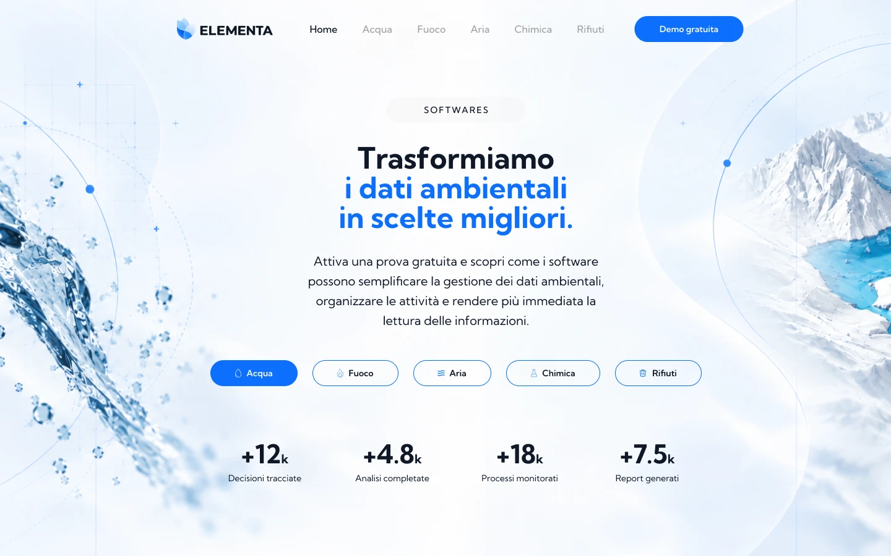
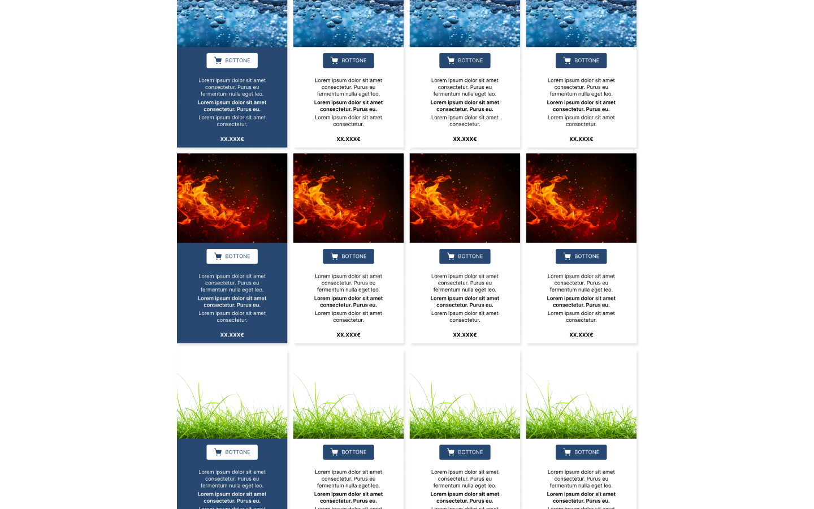
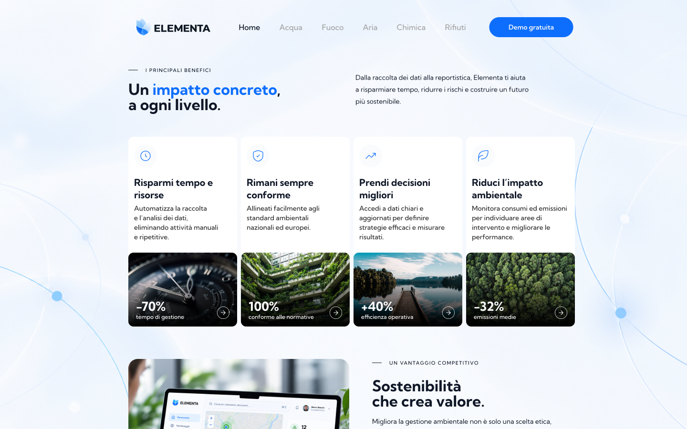
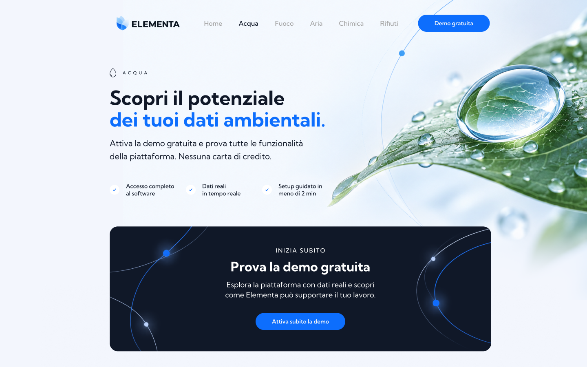
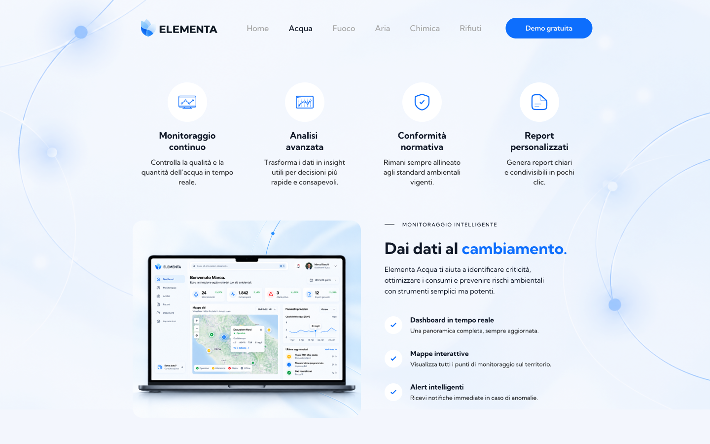
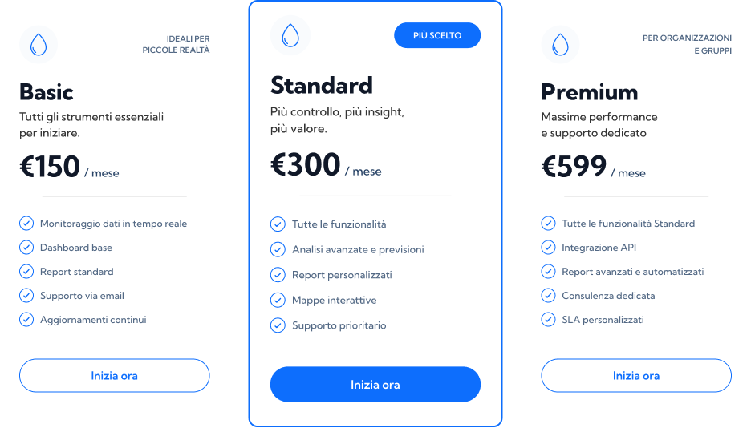
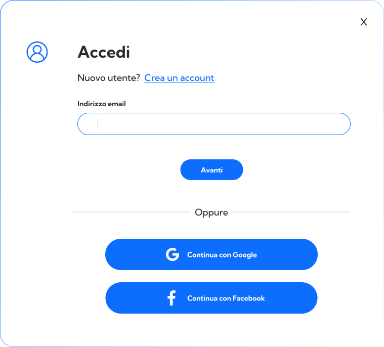
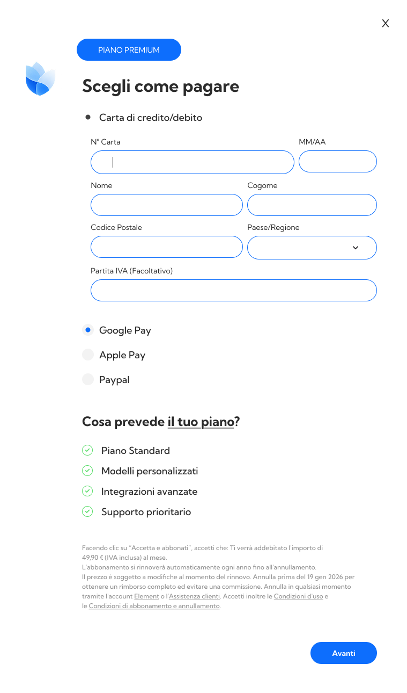

01
Audit
Stakeholder conversations to understand their problems, needs and product know-how.
Analysis of available analytics data to identify insights from the previous website.
From a crowded software catalog to a structured product journey.
A B2B SaaS redesign focused on clarifying product value, making the free trial easier to discover and creating a more structured path from product exploration to subscription.
Case study based on a real professional project. The identity, content and materials shown have been recreated and reworked specifically for this portfolio.

The existing experience presented multiple software products, features and actions within a dense interface. The amount of competing information made product value harder to scan and created a fragmented path toward trial and subscription.

The redesign started from a review of the existing product, competitor benchmarking and an information-architecture pass, combined into design hypotheses before any screen was drawn.
Reorganizing content and journeys to separate product discovery, evaluation and conversion.
A significant share of users who eventually subscribed had previously started with a free trial.
Further research suggested that the trial helped people understand the software's ease of use and its benefits before committing to a subscription.
Subscribers frequently passed through a free trial first.
The trial played an important role in helping potential customers evaluate the product before subscription.
Make the free trial a primary product-discovery path instead of treating it as a secondary action.
After the initial analysis and benchmark review, the information was reorganized into multiple levels to create a more structured path through product discovery, evaluation and subscription.
Instead of concentrating product information, trial access, pricing and subscription actions in the same experience, the journey was distributed across pages with clearer responsibilities.
Two wireframes, each split across two 1440 × 900 presentation screens.


CLICK TO VIEW CLOSER
The homepage now leads with a single value statement and direct access to the five product categories, then unfolds into benefits, proof points and a dedicated trial call to action further down the page.

The homepage leads with one outcome-driven statement and a single primary action, instead of splitting attention across every category at once. Scrolling then reveals the supporting evidence, benefits, proof metrics and a dashboard preview, in a clear, scannable order.
Each software category, Acqua, Fuoco, Aria, Chimica, Rifiuti, now opens with a focused value statement and an immediate free-trial path, before introducing benefits and deeper functionality.


The page leads with a stronger, outcome-focused value proposition and puts the free trial one click away instead of leaving it buried in navigation. Benefits are explained before functionality, and the messaging is written for the specific software category rather than the platform as a whole.
The redesign reduces friction from plan selection to payment by keeping the chosen plan visible, introducing Google and Facebook sign-in, and simplifying the checkout form. This describes a UX redesign, not measured conversion results.



The selected software, plan, price and the features it includes stay visible throughout the flow, so the choice can always be verified without leaving the process, reducing uncertainty and unnecessary backward navigation right before payment. This is a design hypothesis behind the recap, not a measured outcome.
The flow was designed to reduce unnecessary steps and make plan, access and payment feel like one sequence.
This project evolved from reorganizing a crowded landing page into redesigning an entire acquisition journey, from discovery to subscription, while keeping the free trial as the primary decision-making path.


These describe changes in the designed experience, how information, communication and flow were restructured. They are not business-performance results.
A real client SaaS project shaped by behavioral inputs, a structured discovery-to-subscription path, a modular architecture and an explicit interaction-state system.